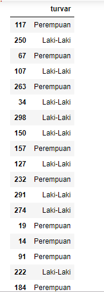
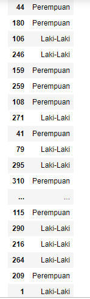
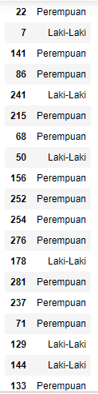
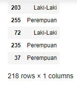
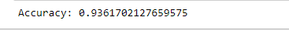
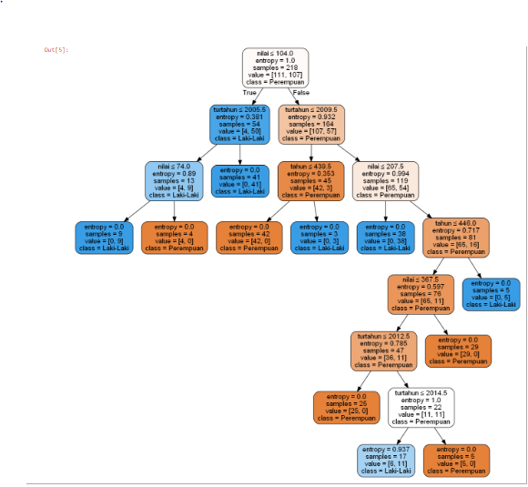

DECISION TREE¶
Pengertian Decision tree¶
Secara konsep Decision tree adalah salah satu dari teknik decision analysis.Tries sendiri pertama kali diperkenalkan pada tahun 1960-an oleh Fredkin. Trie atau digital tree berasal dari kata retrival (pengambilan kembali) sesuai dengan fungsinya. Secara etimologi kata ini diucapkan sebagai ‘tree’. Meskipun mirip dengan penggunaan kata ‘try’ tetapi hal ini bertujuan untuk membedakannya dari general tree. Dalam ilmu komputer, trie, atau prefix tree adalah sebuah struktur data dengan representasi ordered tree yang digunakan untuk menyimpan associative array yang berupa string. Berbeda dengan binary search tree (BST) yang tidak ada node di tree yang menyimpan elemen yang berhubungan dengan node sebelumnya dan, posisi setiap elemen di tree sangat menentukan. Semua keturunan dari suatu node mempunyai prefix string yang mengandung elemen dari node itu, dengan root merupakan string kosong. Values biasanya tidak terkandung di setiap node, hanya di daun dan beberapa node di tengah yang cocok dengan elemen tertentu.
Secara singkat bahwa Decision Tree merupakan salah satu metode klasifikasi pada Text Mining. Klasifikasi adalah proses menemukan kumpulan pola atau fungsi-fungsi yang mendeskripsikan dan memisahkan kelas data satu dengan lainnya, untuk dapat digunakan untuk memprediksi data yang belum memiliki kelas data tertentu (Jianwei Han, 2001).
Decision Tree adalah sebuah struktur pohon, dimana setiap node pohon merepresentasikan atribut yang telah diuji, setiap cabang merupakan suatu pembagian hasil uji, dan node daun (leaf) merepresentasikan kelompok kelas tertentu. Level node teratas dari sebuah Decision Tree adalah node akar (root) yang biasanya berupa atribut yang paling memiliki pengaruh terbesar pada suatu kelas tertentu. Pada umumnya Decision Tree melakukan strategi pencarian secara top-down untuk solusinya. Pada proses mengklasifikasi data yang tidak diketahui, nilai atribut akan diuji dengan cara melacak jalur dari node akar (root) sampai node akhir (daun) dan kemudian akan diprediksi kelas yang dimiliki oleh suatu data baru tertentu.
Decision Tree menggunakan algoritma ID3 atau C4.5, yang diperkenalkan dan dikembangkan pertama kali oleh Quinlan yang merupakan singkatan dari Iterative Dichotomiser 3 atau Induction of Decision “3″ (baca: Tree). Algoritma ID3 membentuk pohon keputusan dengan metode divide-and-conquer data secara rekursif dari atas ke bawah. Strategi pembentukan Decision Tree dengan algoritma ID3 adalah: • Pohon dimulai sebagai node tunggal (akar/root) yang merepresentasikan semua data.. • Sesudah node root dibentuk, maka data pada node akar akan diukur dengan information gain untuk dipilih atribut mana yang akan dijadikan atribut pembaginya. • Sebuah cabang dibentuk dari atribut yang dipilih menjadi pembagi dan data akan didistribusikan ke dalam cabang masing-masing. • Algoritma ini akan terus menggunakan proses yang sama atau bersifat rekursif untuk dapat membentuk sebuah Decision Tree. Ketika sebuah atribut telah dipilih menjadi node pembagi atau cabang, maka atribut tersebut tidak diikutkan lagi dalam penghitungan nilai information gain. • Proses pembagian rekursif akan berhenti jika salah satu dari kondisi dibawah ini terpenuhi:
- Semua data dari anak cabang telah termasuk dalam kelas yang sama.
- Semua atribut telah dipakai, tetapi masih tersisa data dalam kelas yang berbeda. Dalam kasus ini, diambil data yang mewakili kelas yang terbanyak untuk menjadi label kelas pada node daun.
- Tidak terdapat data pada anak cabang yang baru. Dalam kasus ini, node daun akan dipilih pada cabang sebelumnya dan diambil data yang mewakili kelas terbanyak untuk dijadikan label kelas.
Beberapa contoh pemakaian Decision Tree,yaitu : • Diagnosa penyakit tertentu, seperti hipertensi, kanker, stroke dan lain-lain • Pemilihan produk seperti rumah, kendaraan, komputerdanlain-lain • Pemilihan pegawai teladan sesuai dengan kriteria tertentu • Deteksi gangguan pada computer atau jaringan computer seperti Deteksi Entrusi, deteksi virus (Trojan dan varians),dan lain-lain
Pada project ini,Kami mencoba mengakali konsep decision tree dengan cara,mengubah implementasinya pada penjumlahan nilai dari tiap kepribadian. Jadi gini,gampangannya..
Kunci dari program kami terletak pada pertanyaan utama.Jadi gini,4 kepribadian itu dibagi menjadi 2 golongan besar, yaitu :
a. Ekstrovert : sanguinis dan Koleris b. Introvert : Melankolis dan Plegmatis
Kelebihan & Kekurangan¶
Kelebihan
- Sebagai alat edukasi yang bagus untuk para pekerja. Dapat digunakan untuk mengetahui bagaimana tindakan dan keputusan mereka mempengaruhi sebuah situasi.
- Sangat berguna sebagai human factor analysis pada situasi tertentu.
- Cara yang baik bagi manajer untuk melihat seberapa besar simpati seorang pekerja atas terjadinya insiden.
Kekurangan
- Bisa menjadi kurang jelas apabila setiap point pada decision tree tidak dilakukan pengambilan keputusan yang teliti.
- Sulit untuk memperhitungkan elemen lain.
STUDY KASUS¶
Studi Kasus pada data Pasien-jakarta.csv¶
Implementasi Study kasus :
-
Import Libraries¶
Pada Kasus ini, saya akan menggunakan library panda, pydotplus dan graphviz
# Load libraries
import pandas as pd
from sklearn.tree import DecisionTreeClassifier # Import Decision Tree Classifier
from sklearn.model_selection import train_test_split # Import train_test_split function
from sklearn import metrics #Import scikit-learn metrics module for accuracy calculation
import numpy as np
import pandas as pd
import matplotlib.pyplot as plt
from sklearn.tree import export_graphviz
from sklearn.externals.six import StringIO
from IPython.display import Image
import pydotplusBerikut Ini cara install library pandas, pydotplus, dan graphviz dengan cara buka CMDpip install pandas
pip install pydotplus
pip install graphvis-
Menginput data serta menentukan data test dan data train¶
#import dataset
data = pd.read_csv("Pasien-jakarta2.csv")
x = data[['idx','tahun','nilai']]
y = data[['turvar']]
x_train, x_test, y_train, y_test = train_test_split(x, y, test_size=0.3,random_state =1)
y_train-
Membuat objek classifier Decission Tree, Train Decission, dan Prediksi respons untuk uji dataset¶
# Create Decision Tree classifer object
clf = DecisionTreeClassifier(criterion="entropy", max_depth=7)
# Train Decision Tree Classifer
clf.fit(x_train,y_train)
#Predict the response for test dataset
predicted_y = clf.predict(x_test)
-
Model accuracy, seberapa sering prnggolongnya benar.?¶
# Model Accuracy, how often is the classifier correct?
print("Accuracy:",metrics.accuracy_score(y_test, predicted_y))-
Menampilkan Secara Visual pohon keputusan menggunakan Graphviz¶
feature_cols = ['tahun','turtahun', 'nilai']
dot_data = StringIO()
export_graphviz(clf, out_file=dot_data,
filled=True, rounded=True,
special_characters=True, feature_names = feature_cols,class_names=['Perempuan','Laki-Laki'])
graph = pydotplus.graph_from_dot_data(dot_data.getvalue())
graph.write_png('Pasien-jakarta2.png')
Image(graph.create_png())OUTPUT :¶






Referensi¶
http://dyan123.blogspot.com/2012/03/pengertian-decision-tree.html